Heterogeneous Trajectory Prediction and Social Navigation for Construction-Site Robots
Abstract
Construction sites bring people and heavy vehicles into shared working spaces under starkly asymmetric physical constraints and operational obligations. Standard social navigation approaches treat all nearby agents as interchangeable pedestrians, but on a site, treating every entity symmetrically fails to distinguish between courteous avoidance and true safety. This project introduces a closed-loop simulation environment and a joint trajectory-prediction and social-navigation stack for one robot operating among 5 to 19 heterogeneous agents. Humans follow unicycle dynamics with limited visual fields, while site vehicles follow constrained bicycle kinematics and hold their path. Agent movement couples route tracking with optimal reciprocal collision avoidance, encoding operational priority directly into velocity-space responsibility splits.
Controlled evaluation demonstrates that running reciprocal collision avoidance as an ordinary peer resolves most interference, reducing contact events from 11 to 1. Incorporating trajectory forecasts does not eliminate the residual contacts, which arise when workers enter the robot's space from outside their own field of view, but it buys operating margin: intrusion into human safety zones falls. The same code drives the Robotarium miniature arena under a single uniform scale, and the shipped demos reach their goals with zero proximity, boundary and actuator-limit violations.
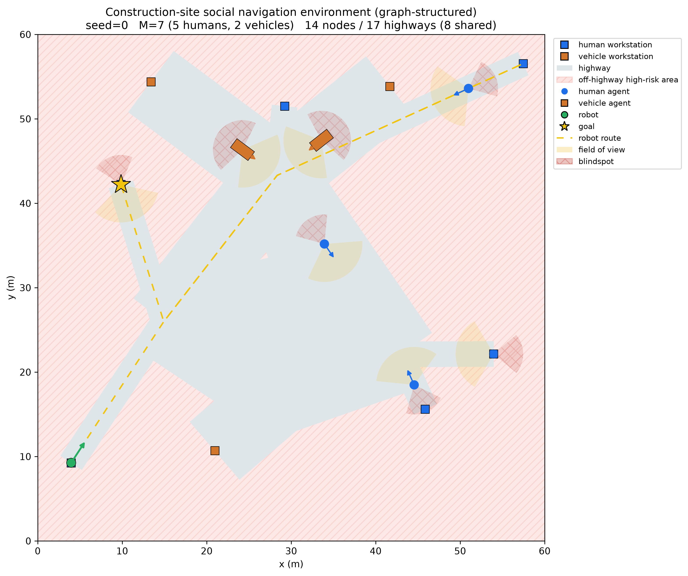
A generated worksite, 60 m across: walkable corridors, off-corridor hazard area, human and vehicle workstations, each agent's 60° field of view and rear blindspot, and the robot's planned route.
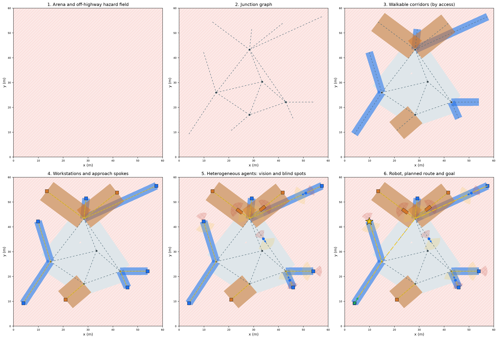
How a site is built, layer by layer: arena and hazard field, junction graph, walkable corridors, workstations, agents with vision and blind spots, then the robot and its route.
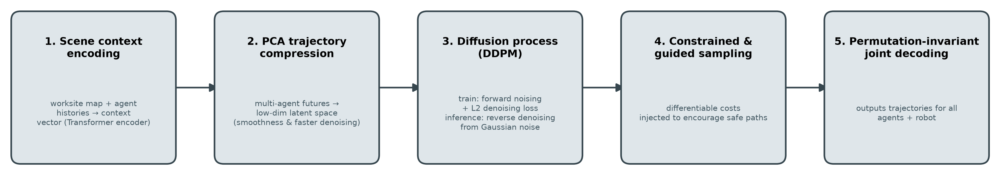
Predictor and planner share one representation: context is encoded once, futures are denoised jointly for every agent and the robot, and safety is applied during sampling rather than after it.
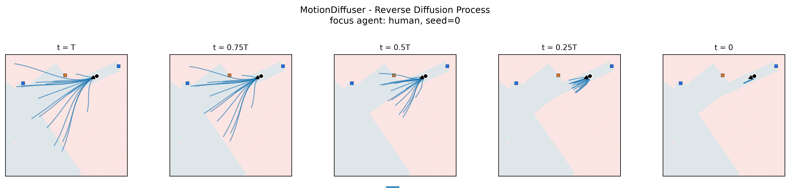
Reverse diffusion: the joint sample is denoised from noise, with the robot's rows projected onto the hard-constraint safe set inside the loop.
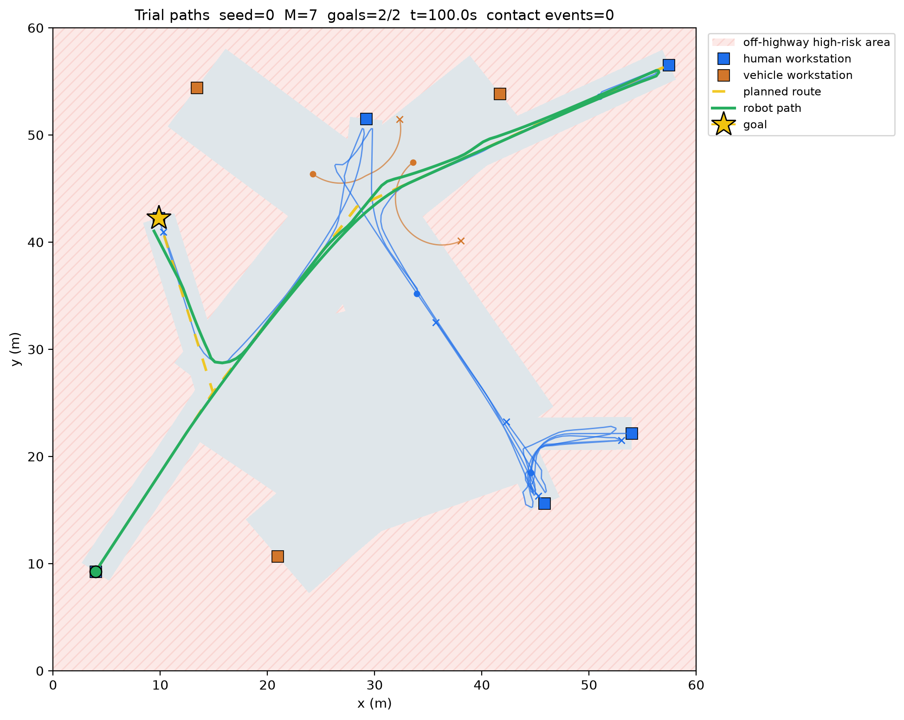
One closed-loop trial: planned route, executed path, and the two goals the robot visits.
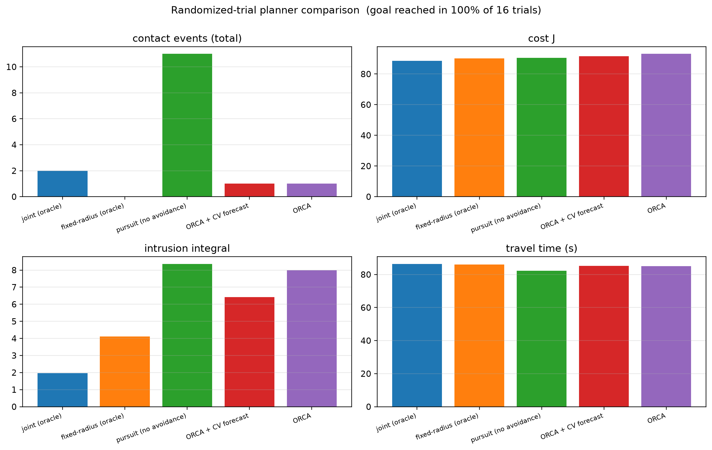
The five planners on the same trials. Figure labels use internal planner names; joint (oracle) is the MPC + perfect-forecast row. The best J is not the safest row — cost trades travel time against intrusion, as the objective intends.
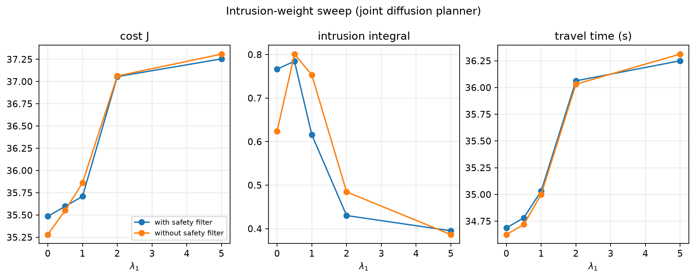
Sweeping λ₁: the soft social cost is bought with travel time. Measured before the switch to ORCA agents.
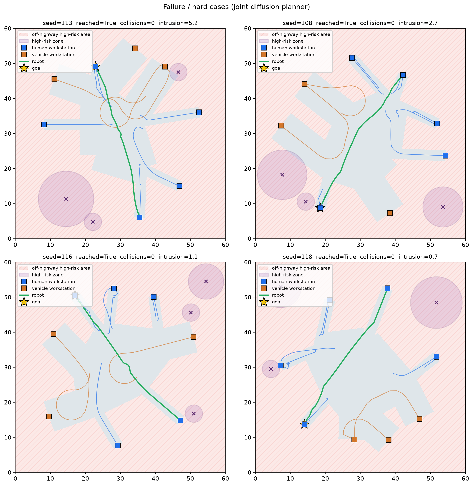
The hardest trials rather than outright failures: the largest intrusions, where an agent cut across the robot's route. Measured before the switch to ORCA agents.
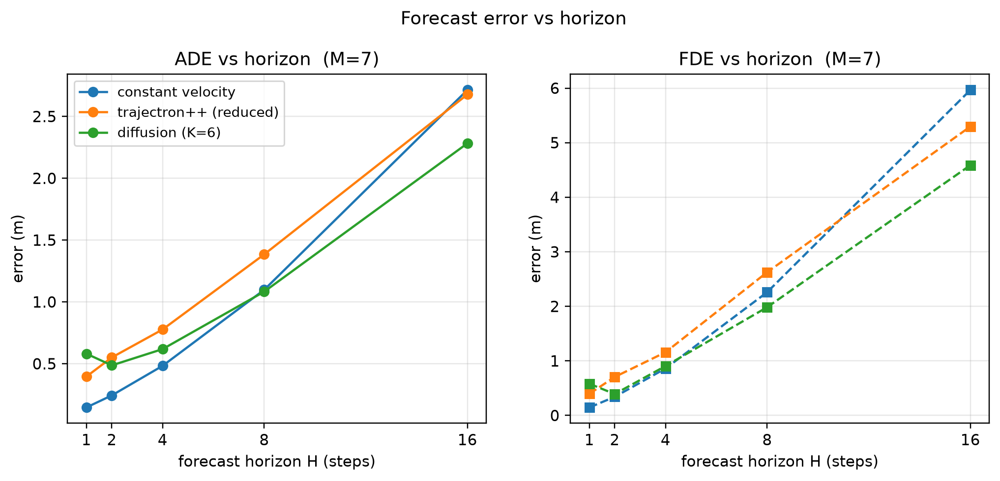
ADE / FDE against forecast horizon for constant velocity, the reduced Trajectron++, and the diffusion model.
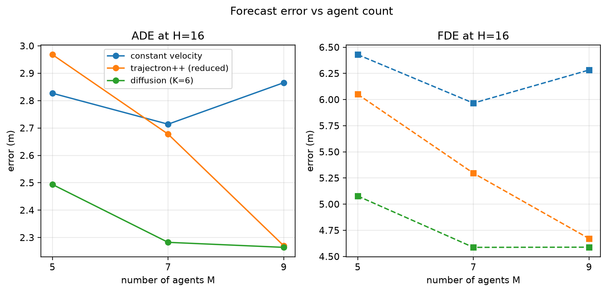
ADE / FDE against agent count M. The joint models gain as the crowd grows.
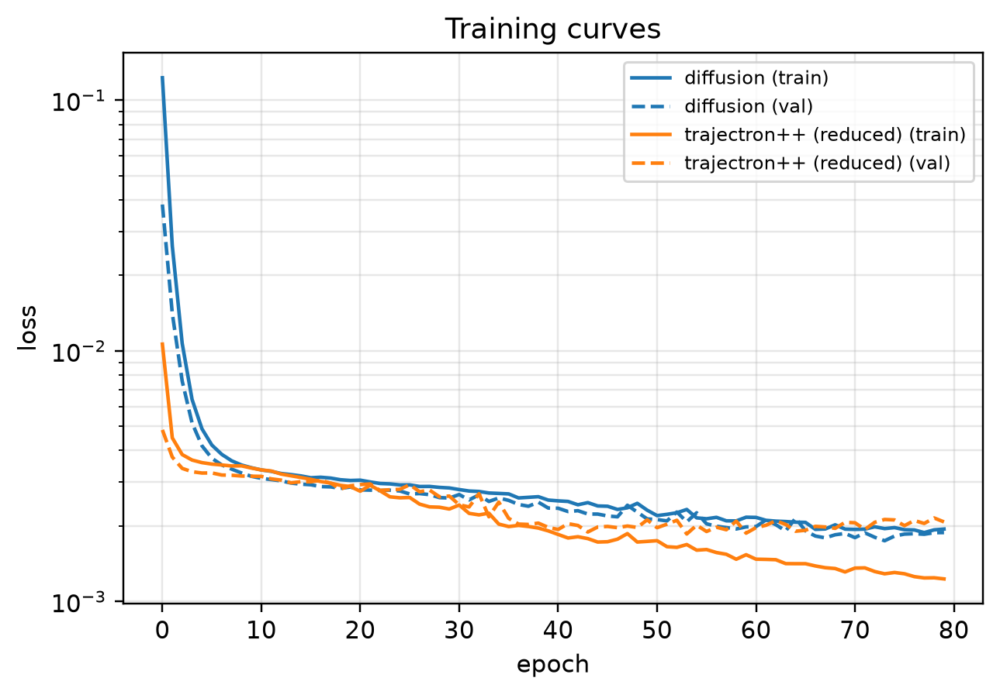
Training loss for the diffusion and Trajectron++ predictors.
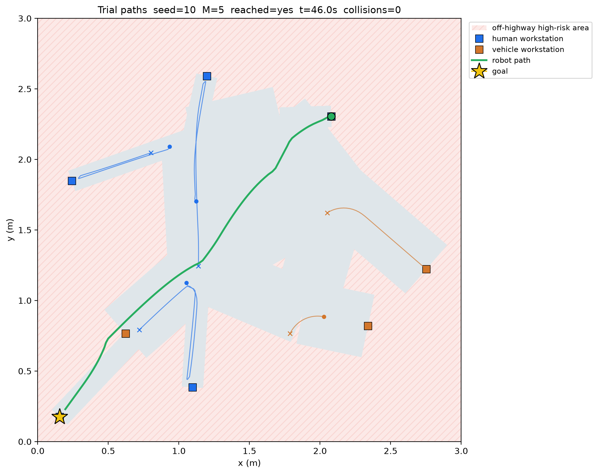
Hardware-scale schematic: the robot meeting a site vehicle that will not yield.
The problem
A construction site is not a crowd of interchangeable pedestrians: people and heavy vehicles share the ground under different physics and different obligations, so "be polite to everyone" is not the same as "safe". Site vehicles follow kinematic bicycle equations with a 4.3 m minimum turning circle and limited steering; they are deliberately slower than walking people, making the operational challenge one of geometry rather than speed. Under site rules, a site vehicle holds its path, so the robot must satisfy safety constraints alone.
In contrast, humans operate as agile unicycles but have a 60° half-angle field of view and a rear blindspot cone. A human enters avoidance constraints only when the robot falls within this visual cone. Furthermore, when agents are stationary at their workstations, they absorb none of the avoidance correction, forcing moving agents to take the entire adjustment. Navigating safely therefore requires reasoning explicitly about these asymmetric physical capabilities and behavioural rules: distinguishing vehicles that hold their course, identifying workers who cannot see approaching hazards, and planning around stationary peers who will not yield.
Environment
Sites are generated reproducibly from seeds as graphs: neutral junctions joined by walkable corridors from a Euclidean spanning tree with loop edges, with degree-1 workstation leaves along a peripheral ring. Narrow 3 m corridors serve humans, 9 m corridors accommodate vehicles, and mesh corridors are shared. Non-robot agents (5 to 19) cycle working to moving to working between two stations. Humans are unicycles (1.4 m/s nominal, 120°/s turn limit) with collision radius D_S = 0.4 m, safety radius D_C = 1.2 m, a 60° half-angle field of view, and a rear blindspot cone. Vehicles follow bicycle kinematics (1.0 m/s nominal, 30° steering, D_S = 1.5 m, D_C = 3.0 m at the 60 m reference scale).
Pure-pursuit waypoints project into ORCA, encoding site reciprocity: vehicles take 5% of recovery, humans 95%, like kinds split evenly, stationary neighbours absorb none, and the robot takes the human share. Three engineering adaptations keep ORCA stable for nonholonomic bodies at a 0.5 s timestep: a two-phase update snapshotting all poses before commanding velocities, reachable-velocity scaling that scales down velocities steering cannot realise within a step, and a 0.35 m coarse-step margin keeping combined radii above one step of human travel.
Method
All predictors share a scale-free representation where entity positions are normalised by arena size, consuming shared observations over N = M + 1 entities to output joint forecasts over horizon H. Three predictors implement this interface: constant velocity; a reduced Trajectron++ baseline using a discrete conditional VAE over interaction modes; and a compact MotionDiffuser-style diffusion model combining a GRU history encoder with a self-attention transformer block across entity tokens. On a CPU budget, the diffusion model uses x0-prediction rather than noise prediction, a cosine noise schedule ensuring terminal noise purity, and residual diffusion over a constant-velocity prior to focus capacity on interaction adjustments.
The planner executes four stages: forecasting, generating 12 candidate unicycle manoeuvres along the route, scoring candidates against predicted modes using progress, intrusion, and freeze penalties with a hard barrier check, and filtering commands through a reactive clearance guard against current state. In safety diffusion mode, the robot trajectory is pinned via inpainting and projected onto the hard-constraint safe set during reverse diffusion, establishing safety directly within plan generation. An oracle ablation replaces predictions with ground-truth futures to establish an upper performance bound.
Constant velocity
The baseline, and the prior the learned models are built on.
Reduced Trajectron++
A joint encoder plus a discrete conditional VAE over interaction modes — a like-for-like baseline, not a faithful reproduction.
MotionDiffuser-style diffusion
A GRU history encoder plus self-attention over entity tokens, with a DDIM sampler returning K samples.
Results
The five-planner benchmark evaluates distinct navigation mechanisms over sixteen trials on out-of-sample seeds 100 to 115 (M = 7, two goals per trial), with two perfect-knowledge references to isolate forecasting from planning. Path following sets the uncoordinated floor where the robot does not yield at all, and is not counted as a baseline. Peer-level ORCA asks how far reciprocal etiquette alone can go, while adding a constant-velocity forecast to ORCA isolates the value of having any future prediction at all. The remaining two rows benchmark reactive repulsion against full model-predictive control under ground-truth agent futures as an upper bound.
Three findings structure the results. First, the crowd absorbs the robot: doing nothing yields 11 contact events, whereas running the agents' own ORCA policy yields 1 for roughly 3 s of extra travel. A robot that behaves like a well-mannered peer is already most of the way there, establishing the baseline any learned planner must beat. Second, prediction buys distance, not non-collision: adding a constant-velocity forecast to ORCA leaves contacts at 1 but cuts intrusion from 7.99 to 6.42 and cost J from 93.13 to 91.67, turning bare non-collision into comfortable clearance. Third, residual contacts reflect geometry rather than policy. The perfect-knowledge MPC row still records two events, both involving workers walking into the robot from outside their own field of view (bearings +122° and +140° against a 60° half-angle) while the robot was stopped or crawling. The barrier is symmetric but the actuator is not: the planner can decline to enter someone's space, but it cannot step out of one within 0.5 s, making penetrations of 0.6 cm and 2.7 cm unavoidable in the final 0.5 s step. What the table does not show is whether learned predictors improve navigation cost, because learned planner rows are not yet re-measured on the current agent policy.
| Planner | Prediction | Success | Contact events | Steps in contact | J | Travel (s) | Intrusion |
|---|---|---|---|---|---|---|---|
| Pursuit, no avoidance | none | 100% | 11 | 24 | 90.58 | 82.2 | 8.36 |
| ORCA (the headline baseline) | none | 100% | 1 | 2 | 93.13 | 85.1 | 7.99 |
| ORCA + constant-velocity forecast | CV | 100% | 1 | 2 | 91.67 | 85.2 | 6.42 |
| Fixed-radius + perfect forecast | perfect | 100% | 0 | 0 | 90.20 | 86.1 | 4.11 |
| MPC + perfect forecast | perfect | 100% | 2 | 2 | 88.58 | 86.4 | 1.97 |
Contact events count one incident per agent per episode; steps in contact count 0.5 s control steps in which any agent was inside its D_S.
Path following: follows the route with no avoidance, giving the uncoordinated floor.
ORCA: runs the same reciprocal collision-avoidance policy as the crowd.
ORCA + CV: adds a constant-velocity forecast to the peer policy.
Fixed-radius + perfect: reacts to ground-truth futures with a fixed clearance radius.
MPC + perfect: optimises route progress and clearance with ground-truth futures.
Predictor benchmark
The open-loop predictor benchmark evaluates constant velocity, reduced Trajectron++, and conditional diffusion across held-out scenes using minimum average and final displacement errors. These performance figures are strictly preliminary: they were collected under earlier social-force agent dynamics before the transition to the reciprocal ORCA framework, and the learned models have not yet been evaluated in closed-loop navigation under the current simulation dynamics.
The evaluation reveals a pronounced horizon split between kinematic extrapolation and joint learned models. At short horizons (H = 1 and H = 4 steps), constant velocity outperforms both neural models because agent motion remains smooth and largely linear across half-second control intervals. As the prediction horizon extends to H = 16 steps and agent density scales from M = 5 to 9, constant extrapolation degrades significantly. In this long-horizon regime, the structured interactions captured by joint attention dominate, with the diffusion model best or tied-best at H = 16 for every crowd density tested. Rather than selecting a single metric, the benchmark documents both regimes honestly to reflect the trade-off between short-term kinematic continuity and long-term interaction modelling.
| Model | ADE H=1 | ADE H=4 | ADE H=16 | FDE H=16 |
|---|---|---|---|---|
| Constant velocity | 0.15 | 0.48 | 2.71 | 5.97 |
| Trajectron++ (reduced) | 0.40 | 0.78 | 2.68 | 5.30 |
| Diffusion (K=6) | 0.58 | 0.62 | 2.28 | 4.59 |
On the Robotarium
Worksite layouts map directly into the Robotarium arena under a uniform scale factor, instantiating the robot and all M background agents as Robotarium unicycle robots controlled by the shared route-following and ORCA controllers. Two documented approximations reconcile the site formulation with the platform: first, because the Robotarium simulates only unicycles, vehicles are represented by their curvature-equivalent instantaneous turn rates; second, because its robots are approximately 0.11 m in diameter and cannot shrink, a miniature site (arena approximately 3 m) is used, flooring each agent's collision radius at the robot diameter while safety radii preserve the reference D_C / D_S ratio.
A unicycle barrier certificate is applied, and the simulator's native debug() validation counters are reported alongside site-frame metrics. Benchmark demonstration seeds are ranked on a cheap site-frame trial requiring the goal to be reached with zero collisions and a close encounter of the requested kind. The first surviving candidate is then confirmed on the Robotarium; all three shipped demonstrations successfully reach the goal with zero robots_too_close, zero out-of-boundary, and zero actuator-limit violations.
Crossing the site while agents work and travel — minimum encounter 0.57 m.

Passing a worker who must yield — minimum encounter 0.37 m.

Meeting a site vehicle that will not yield — minimum encounter 0.83 m.
Reproducing it
Everything here is seeded: site geometry, agent routes and evaluation trials are generated from a seed, so a reported number has an address you can rerun. The complete simulation environment, graph routing utilities, nonholonomic motion models, and reciprocal collision avoidance baselines run entirely without PyTorch dependencies. PyTorch is required only when training or evaluating the learned conditional diffusion and reduced Trajectron++ predictors. The test suite verifies closed-form implementations of the hard and safety barrier metrics alongside an end-to-end Robotarium smoke test that runs the platform loop from coordinate mapping to the simulator's own collision and boundary validation.
git clone https://github.com/noahleegithub/construction-site-social-nav
cd construction-site-social-nav
python -m venv .venv && .venv/bin/pip install -e ".[dev,ml]"
.venv/bin/pip install "git+https://github.com/robotarium/robotarium_python_simulator"
# one closed-loop trial, with animation
python -m construction_nav trial --seed 0 --agents 7 --planner joint --animate
# the five-planner table
python scripts/evaluate_planners.py --baselines-only --agents 7 --trials 16
# Robotarium social-navigation demos
python -m construction_nav robotarium --agents 5 --planner joint --seeds 24Limitations
Several structural constraints define the scope of this project. Validation uses a miniature arena with scaled agents rather than a physical site robot with real perception. Vehicle dynamics are kinematic bicycle models, leaving momentum and load out of scope. Because ORCA is solved in velocity space and projected onto unicycle and bicycle kinematics, theoretical guarantees hold for commanded velocities rather than exactly for integrated poses.
In the prediction benchmark, reported metrics are preliminary, having been collected under older social-force dynamics prior to the switch to ORCA agents. The reduced Trajectron++ model serves as a like-for-like baseline rather than a faithful reproduction, and full-scale MotionDiffuser replication is out of scope. Finally, the joint planner evaluates hard constraints against predicted trajectory modes with a reactive guard covering measured states; a true control-barrier-function safety filter would harden the system further.
BibTeX
@misc{lee2026constructionnav,
author = {Noah Lee},
title = {Heterogeneous Trajectory Prediction and Social Navigation for Construction-Site Robots},
year = {2026},
howpublished = {\url{https://github.com/noahleegithub/construction-site-social-nav}},
note = {Simulator and reference implementation}
}